Date: 1 November 2026 · Follow-up to the 31 October audit. This document records implementation and automated/source evidence. Device observations and screenshots are recorded below. Source/unit evidence and direct runtime evidence are distinguished.
Final serial command: ./gradlew :app:compileDebugKotlin testDebugUnitTest lintDebug assembleRelease --no-parallel — BUILD SUCCESSFUL. All 534 unit tests passed, with zero failures/errors. Kotlin compilation and lint passed; the release APK signature verified with apksigner. Warnings remain; this is not a warning-free build.
See final Gradle log. Earlier overlapping Gradle processes caused intermediate-cache failures; those runs are not counted as verification. The final successful runs were serialized after worker edits stopped.
The retest found and fixed two additional correctness bugs: calibration multiplied metre distances by 1,000, blocking a valid 50-minute 10K; stationary strength sessions were silently discarded by a GPS-distance save threshold. Both now have regression tests. Calibration copy now correctly says Required when history is absent.
The final release was installed on RunFlow_FixTest_API35, Android 15, 1080×2400, 420 dpi. Earlier captures used the preceding release during iterative diagnosis; captures 29 onward use the final release. Evidence filenames are raw chronological capture identifiers; some failed automation attempts captured the preceding screen. The curated screenshots below are the accepted evidence, not every raw capture.
| Step | Observed result | Evidence |
|---|---|---|
| 1. Fresh offline install | Zero runs/distance, generic athlete, no invented body measurements | 04, 05 |
| 2. Permission setup | Idle recording screen remains behind optional permission dialogs; no elapsed timer | 15, 16 |
| 3. Recording controls | Full-width Pause/Lap/Finish and Resume labels remain readable | 17, 20, 35 |
| 4. Finish confirmation | Time stayed 0:04 across separate captures, then saved as 0:04 | 36–38 |
| 5. Stationary strength | Correct session title/time display; zero-distance activity successfully saved | 35, 38 |
| 6. New calibration | Required own result; 10K 0:50:00 yields VDOT 40.0 and Continue works | 30, 31 |
| 7. Target mode | Prediction explicitly selected; fixed target is a separate action | 32 |
| 8. Weekly schedule | Sunday visible and selected; long-run/quality summary present | 33 |
| 9. Created plan | 101 workouts generated; neutral Not started; explicit Use prediction | 34 |
| 10. Imperial units | Converted distance/pace chips; unmodified metric instructions explicitly labeled | 34 |
| 11. Settings | Units/theme reachable without a large diagnostic panel | 23, 24 |
| 12. Large text and dark mode | At 150%, navigation words remain whole; white status icons readable on dark background | 29 |
| 13. Recovery defaults | Not answered is explicit, Use 5/10 available, empty Save disabled; explicit selection permitted saving | 27 |
| 14. Chart context | Numeric fitness scale and accessibility range are exposed | 40 |
A System UI-not-responding dialog occurred during initial emulator startup under host build load; Wait recovered it. It was Android System UI, not a RunFlow crash. No RunFlow crash appeared in the collected crash buffer. The recovery reopening automation landed in Analytics instead of the intended form, so persistence after reopening is not claimed as manually verified. Fixed-target creation, triathlon, full denied-permission matrix, populated nonzero chart scales, legacy demo upgrade/reset, 200% text and physical-device behavior remain follow-up acceptance coverage.
| Finding | Implementation and automated/source evidence | Additional acceptance coverage |
|---|---|---|
| F01 Fresh install/demo | Automatic startup seeding was removed from RunFlowApp. Repository analytics excludes isDemo activities; the wizard does not prefill legacy demo profile values. Dashboard and Athlete warn when legacy sample activities remain and Settings offers a local reset. Calibration requires a user result or available history for flows containing that step. |
Fresh offline install, legacy seeded upgrade and reset; verify no sample identity/history influences a real plan. There is no separate Explore demo mode. Generic profile defaults still exist in some calculations; unconfigured values are not a substitute for the athlete's measurements. |
| F02 Metric rounding | Today uses Format.roundedIntOrDash for fitness and form values. AuditRegressionTest checks positive and negative rounding. |
Compare Today and Analytics with the same underlying positive and negative values. |
| F03 Block-load basis | ComplianceCalculator.displaySummary identifies unavailable load and distance, duration or completion fallback; future untouched sessions use a neutral Not started status. AuditRegressionTest covers distance fallback and future sessions. |
Inspect generated and completed plans with each basis and verify labels, values and readable layout. |
| F04 Recording labels | Recording actions use separate full-width controls with minimum height rather than a narrow three-button row. | Check Finish, Pause, Resume and Lap / Next on narrow screens and at 1.0, 1.3, 1.5 and 2.0 font scales. |
| F05 Permission timing | A pending start is resumed from the permission result callback after required location is granted; the service is not started before pending requests return. | Exercise permission grant, denial and retry for location and optional permissions; confirm no timer runs behind dialogs. |
| F06 Finish endpoint | Finish begins a frozen finish state; dismiss/Keep going cancels it, while save uses the frozen endpoint. AuditRegressionTest checks paused controller time and distance do not advance. |
Wait at least 30 seconds in confirmation and check saved time/distance; test Keep going, dismissal and already-paused sessions. |
| F07 Sport-specific recording copy | Record entry describes the selected activity and derives the accessible start label; strength and outdoor swim have specific explanations, and auto-pause/voice-coach text varies. | Check each activity's visible and spoken labels, permission rationale and actual recording behavior. Strength still requires location. |
| F08 Units in instructions | Structured distance and pace chips use selected units. Format.workoutInstructions labels metric-bearing original instruction text in imperial mode; AuditRegressionTest covers preservation and labeling. |
Inspect Today, Plan and Record in both unit systems. Original instruction text remains metric, including generated text where provenance cannot be established; it is labeled rather than converted. |
| F09 System bars | RunFlowTheme sets status and navigation bar icon appearance from the resolved app theme. |
Check app/system light and dark combinations and modal sheets on device. |
| F10 Large text navigation | Bottom navigation and Analytics tabs use wrapping chip layouts with single-line labels. | Verify readable, reachable navigation at 150% and 200% text and on narrower screens. |
| F11 Selected-card contrast | Wizard event cards use onSecondaryContainer for selected content and expose selected semantics. |
Measure selected card text/icon contrast in light and dark themes and verify selection without relying only on color. |
| F12 Long-run day | Day selectors wrap; the schedule shows a text summary of long-run and quality days. | Verify all seven choices, default Sunday, selection changes and confirmation before creation at normal and large text sizes. |
| F13 Recovery answers | Unanswered sliders display Not answered, offer an explicit Use value action, and Save requires a change. | Confirm intentional 5/10, untouched empty Save, editing and clearing existing values, and persistence after reopening. |
| F14 Diagnostics | Troubleshooting is collapsed and moved below common settings; the technical log remains available on expansion. | Verify page scrolling over collapsed and expanded sections and access to Units and Theme. |
| F15 Chart context | Fitness chart adds numeric scale and accessible range; activity streams identify sampling range, elevation availability/constant values and session moving time. | Check empty, constant and populated series, axis readability and screen-reader descriptions against sample duration. |
| F16 Target choice | Running and triathlon target steps distinguish prediction from a fixed target and offer an explicit Set target action; plan header indicates prediction when no target is stored. | Create plans with untouched prediction and explicit target for both disciplines; compare displayed and persisted values, including rounding. |
Authenticated email/Strava flows, server sync and conflict handling, Health Connect imports, real GPS and background recording, battery behavior, and real-device accessibility remain outside the automated evidence. They need the staging-account and physical-device checks described in the original audit. Screenshots and UI trees alone do not establish TalkBack, switch-access, contrast or full accessibility compliance.
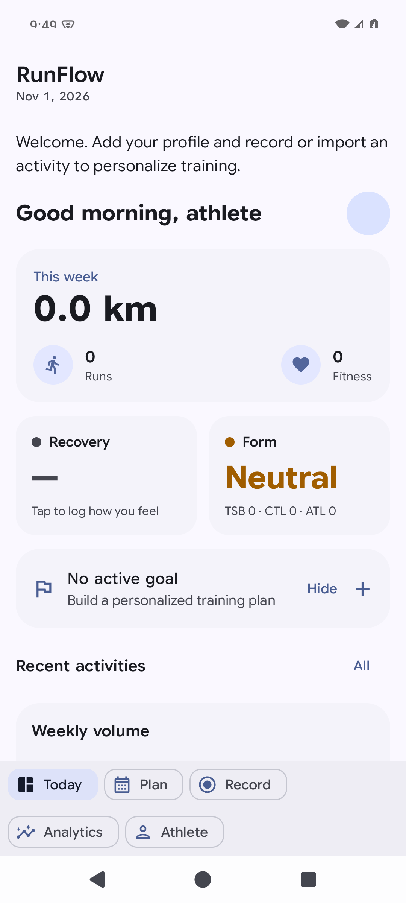
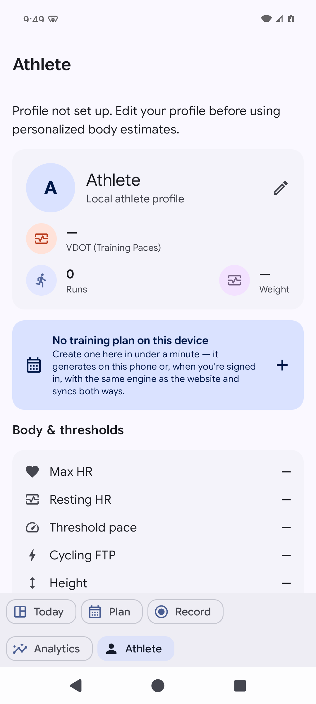
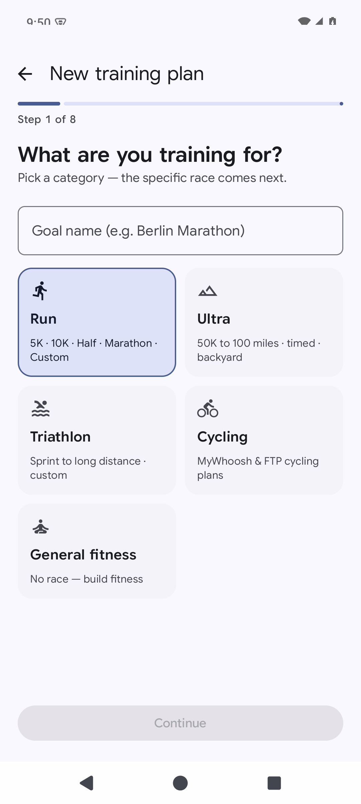
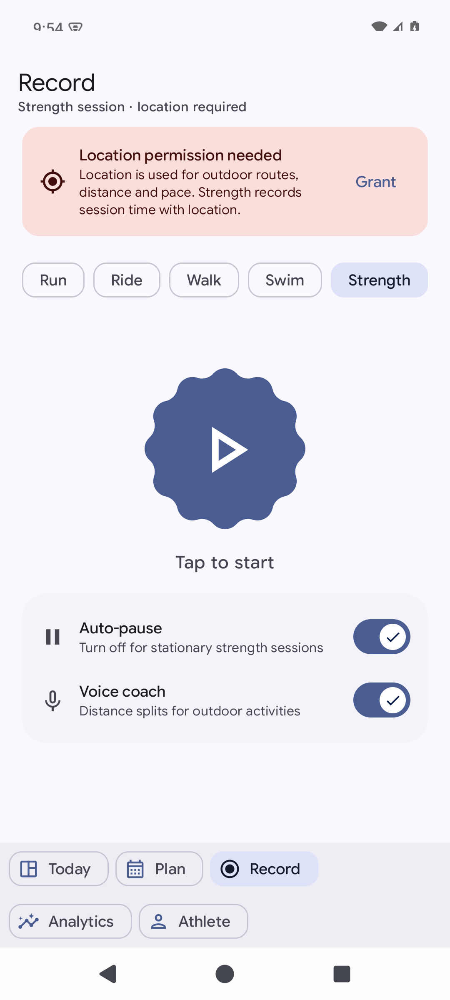
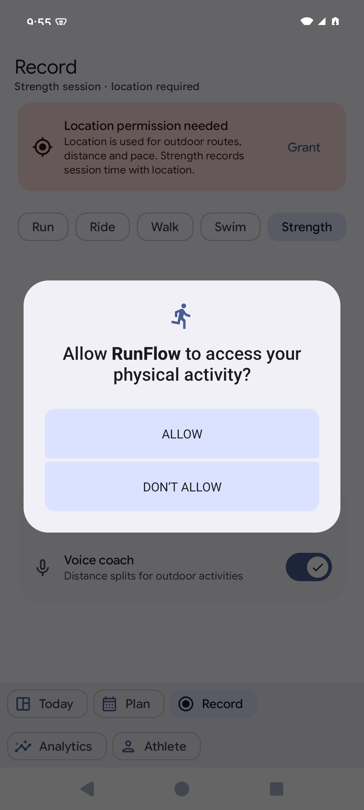
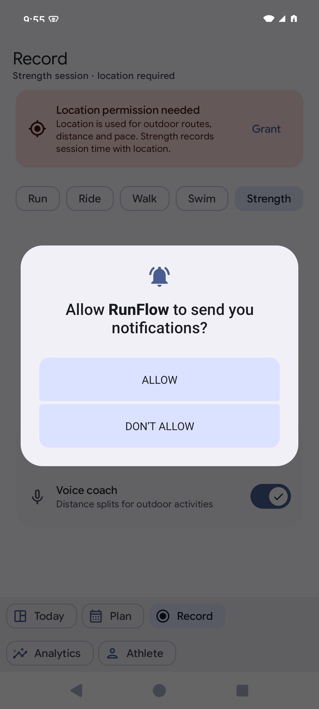
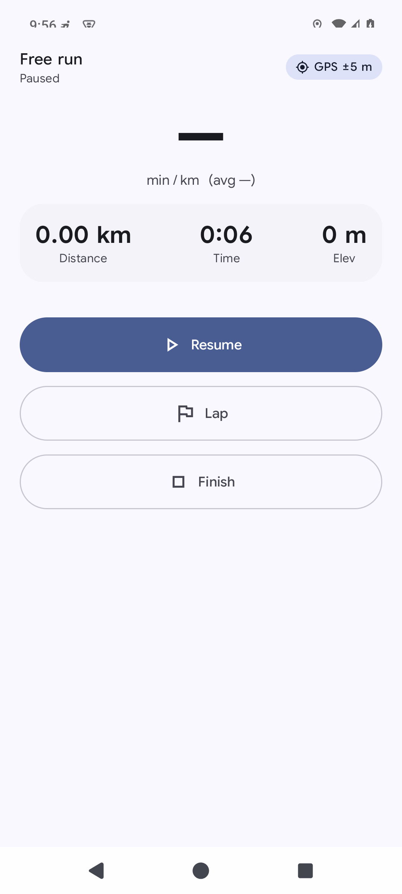
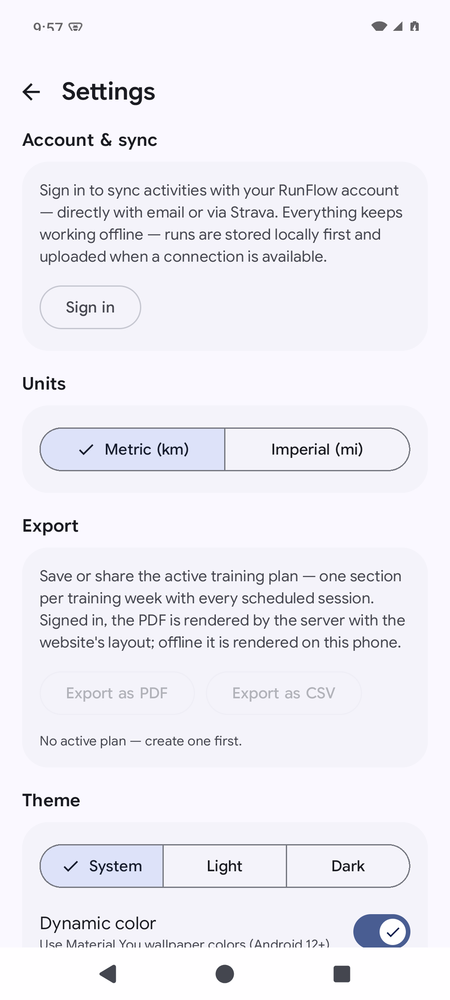
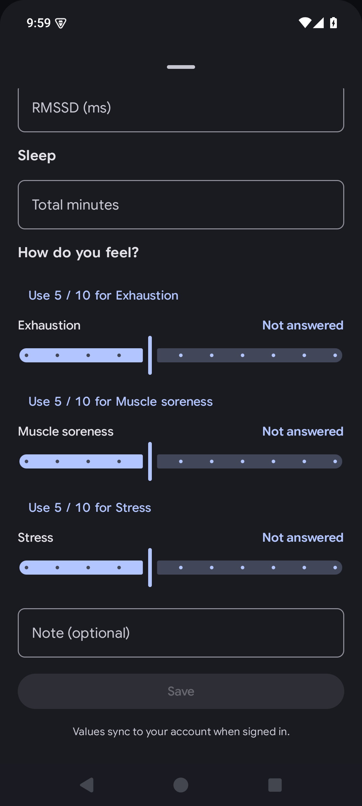
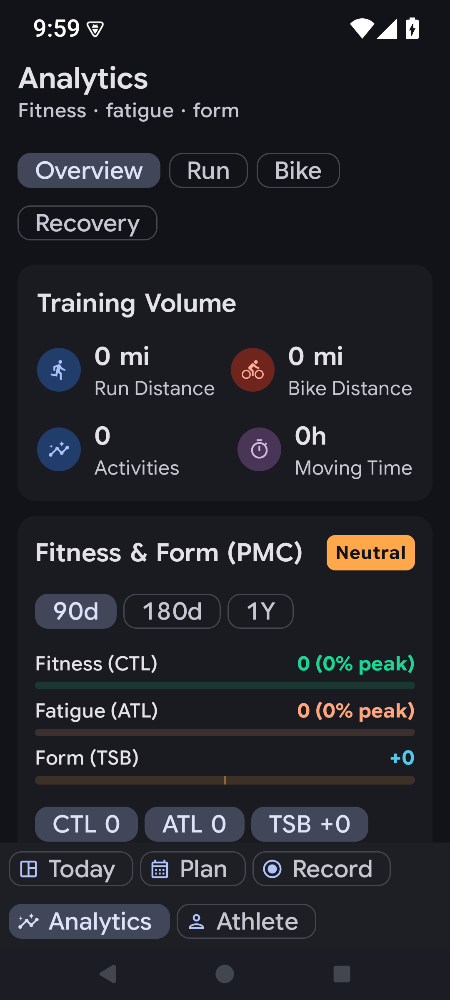
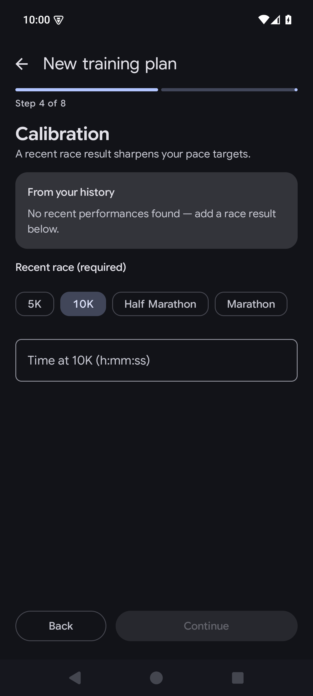
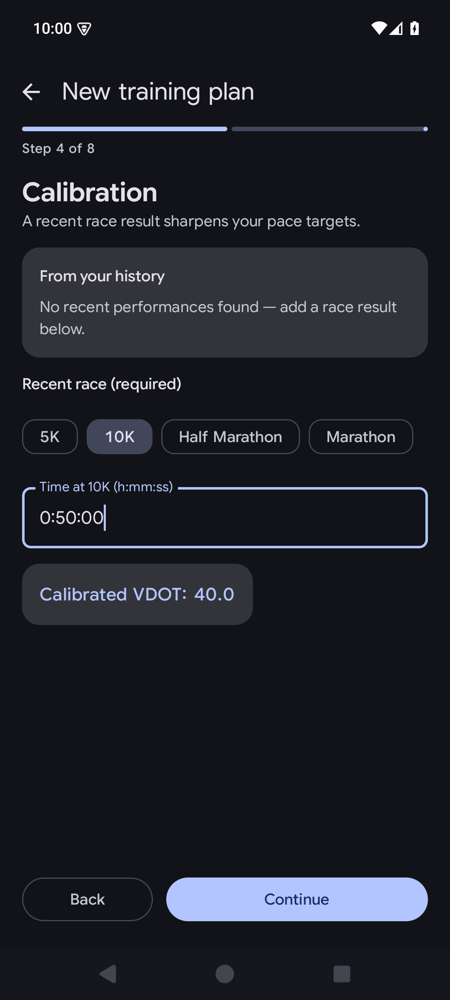
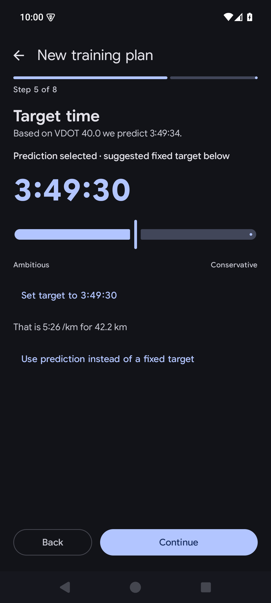
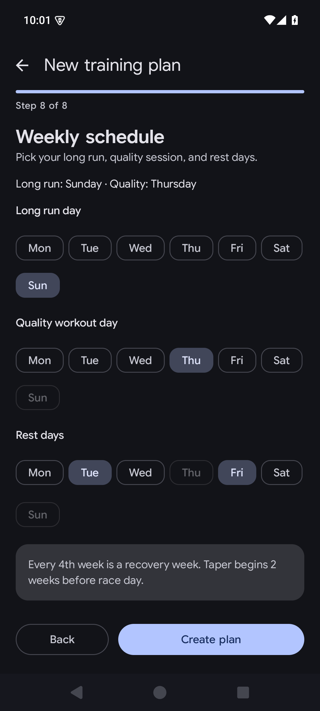
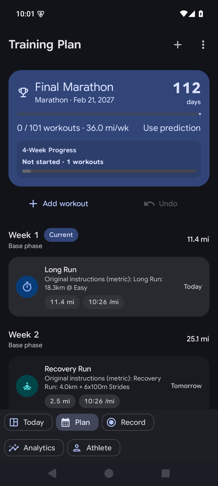
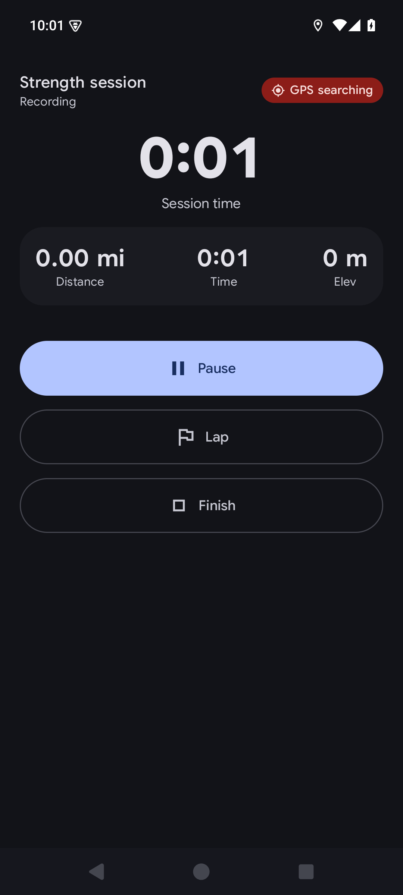
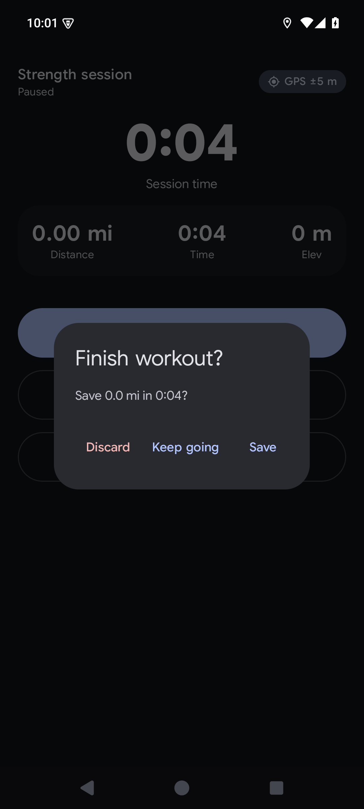
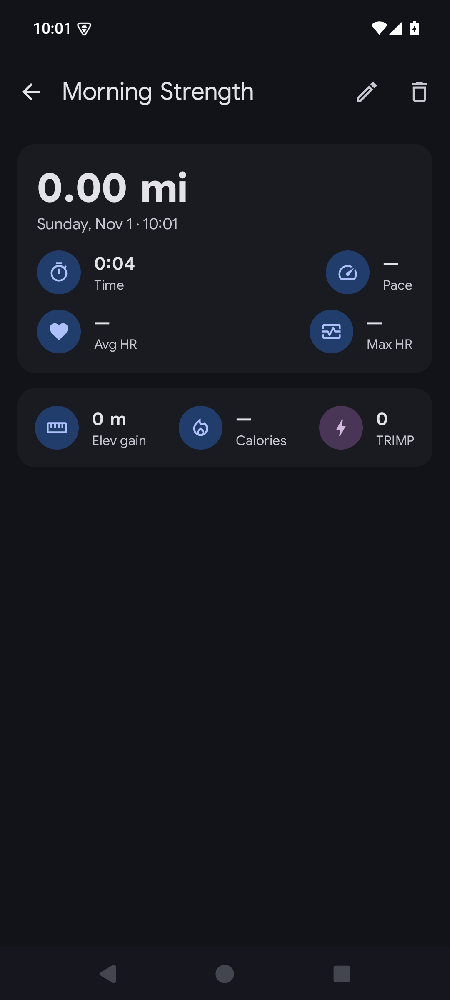
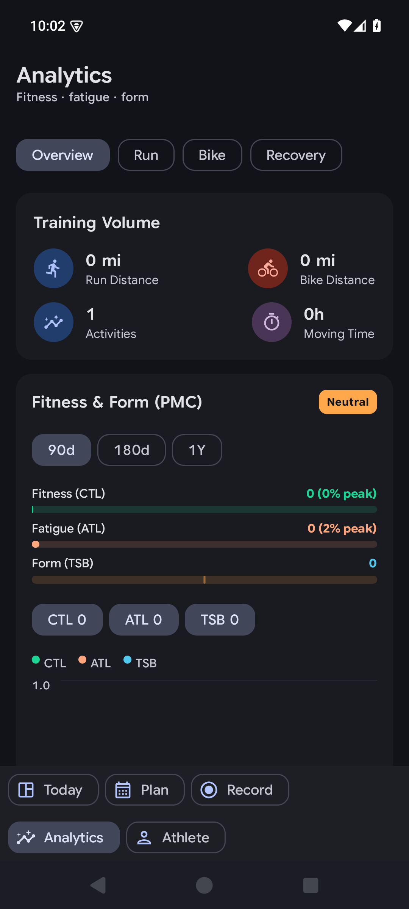
Three GPT-6.1 Terra subagents at medium reasoning implemented/reviewed scoped changes as requested. The primary chat integrated their work and ran final verification. The newly supplied GLM/Gemini MCP review tools were not callable in this session; no GLM or Gemini sign-off is claimed. Unrelated Web edits were preserved. No changes were committed or pushed.